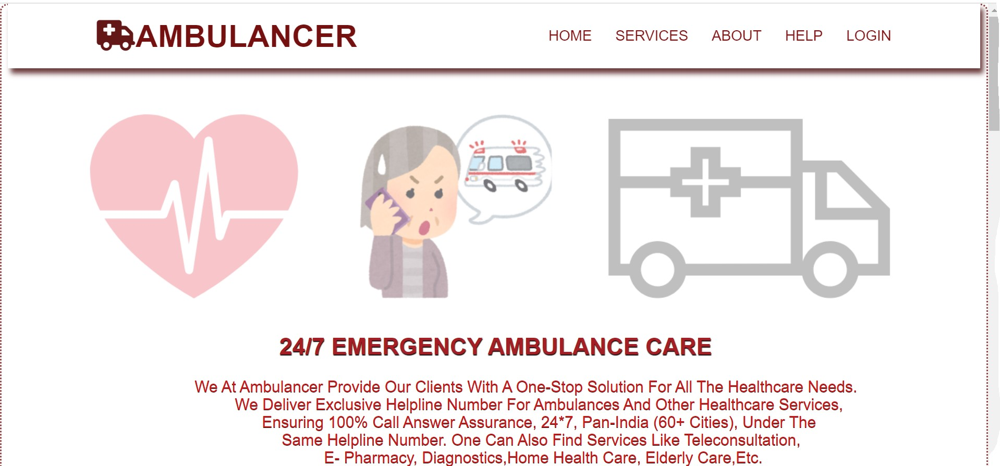
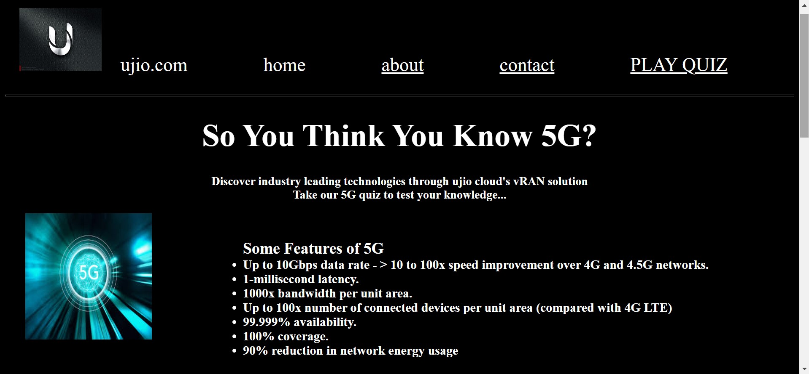

Welcome to my portfolio!
About me
Academic Background: - Currently pursuing BSc in Information Technology (Third Year) - Consistently maintained an impressive CGPA score of 9+ across all semesters - Demonstrated academic excellence and a strong foundation in IT concepts and technologies Key Strengths: - Strong understanding of computer science fundamentals, programming languages, and software development - Proficient in various programming languages including Python, Java, C++ - Familiarity with data structures, algorithms, and software engineering principles - Excellent problem-solving skills, logical thinking, and analytical abilities Projects and Achievements: - Projects include Ambulance Booking System, Arduino Robot Dog, and GK Quiz Website - Served as a core committee member for BITS Technical fest, contributing to the success of various Technicaland non-technical events Skills: - Programming languages: Java,C,C++,Python - Development frameworks and technologies: Django - Databases: MySql,MongoDB - Operating Systems: Windows - Soft skills: Teamwork, communication, problem-solving, adaptability Career Goals: - Pursue a career in software development, IT consulting, or a related field - Continue learning and expanding skill set to stay up-to-date with industry trends and technologies
Projects

Project 1
Project: General Knowledge Quiz Website Description: Created a user-friendly online quiz platform using HTML and CSS, testing users' general knowledge in various categories. The website features a simple and intuitive design, making it accessible to a wide range of users. Key Features: - Multiple-choice questions with four answer options - Questions categorized by topic (e.g., history, science, sports) - Score tracking and display - Simple navigation and user interface Technical Highlights: - Built using HTML5 and CSS3 for a responsive and modern design - Utilized CSS Flexbox for layout and styling - Implemented JavaScript for basic functionality (e.g., score tracking) - Designed a mobile-friendly interface for accessibility

Project 2
Project: Ambulance Booking System Description: Developed a comprehensive ambulance booking system using Django Python, enabling efficient and reliable medical transportation for individuals in need. The system streamlines the booking process, ensuring timely and secure transportation. Key Features: - User-friendly interface for easy booking and management - Real-time ambulance availability and scheduling - Secure payment gateway integration - Automated booking confirmations and updates - Admin dashboard for managing bookings, ambulances, and user accounts Technical Highlights: - Built using Django Python, leveraging its robust framework for scalable development - Implemented user authentication and authorization for secure access - Integrated Google Maps API for accurate location tracking and routing - Utilized PostgreSQL database for efficient data storage and retrieval Impact: - Improved accessibility and convenience for individuals requiring medical transportation - Enhanced operational efficiency for healthcare organizations and ambulance services - Demonstrated expertise in developing complex web applications using Django Python